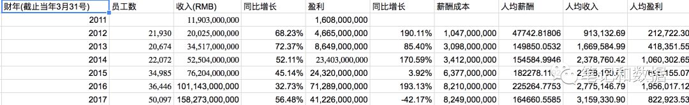

电商之路
29 July 2018
电商之路
序
电商是互联网的高级阶段，因为要在网上付钱，真正的用钱投票。对用户来说，敢于在网上花钱买东西，信任度比在网上聊个天或者搜索一下要高出几百条街。所以电商也是最难做的，如果不靠谱的话没人敢花钱，没人愿意花钱。所以百度腾讯当年上市的时候阿里还在初级阶段。
同时电商也是最肥的肉，真金白银的钱在这个体系内流动，阿里系（阿里巴巴+蚂蚁金服）已经妥妥的中国互联网老大，而且腾讯如果没有微信支付这块，价值还要再打个折扣。而百度现在只是阿里系的几分之一，收入一大块来自于医疗广告，重要原因之一可能是因为百度没有在电子商务这块最大的领域占据自己的位置，假如百度在商品搜索，服务搜索或者支付占据了地盘，可能结果会完全不一样。
这里整理了一下中国电子商务发展历史。
一 混沌时代（1992–1998）
这个时候互联网刚刚起来，一切都还未知，只有马云，郭凡生和少数其他人搞了电子商务。
1992年：电商先驱慧聪网
- 郭凡生创立慧聪，这个时候慧聪还不属于互联网电子商务，做的是商情电话报价服务，2001年才有网络软件，搞的是B2B电子商务。2003年在香港上市，市值一度达到100多亿。2005年左右一度很红火，2010年以后存在感不大。
1995年： 英语翻译奇遇结识互联网，电子商务历史就此改变
- 马云作为翻译陪杭州政府出访西雅图，意外发现了互联网，然后创立B2B网站中国黄页。
历史不能假设，但是有时候会好奇的想，如果那年马云没有作为翻译陪同出访，晚个几年他才知道互联网，他以后还会创立阿里巴巴嘛？还会像今天一样成功嘛？中国的互联网和电子商务进程又会是如何？
1997年：马云北上
- 马云放弃中国黄页，去北京中国外经贸部开发中国网上商品交易市场。
孙德良创办B2B网站中国化工网，2006年在中国A股上市。
1998年：柜台老板
- 刘强东在中关村成立京东公司，这时候不搞电商，主要是在一个柜台卖电子产品， 2004年才成立网络B2C, 2014年在美国上市。
二 拓荒时代 （1999–2002）
这时候互联网概念在硅谷已经火热了，中国这边电子商务的重要企业很多也都在这个时候登场了，大家开始开拓荒地。 主要玩家有阿里巴巴，8848，易趣，卓越网，当当网。
1999年
- 马云创立阿里巴巴成立，蔡崇信也在公司创立的时候加入，阿里巴巴当时主要做B2B，2007年在香港上市B2B业务，2012年私有化。在这一年，高盛投资阿里巴巴500万美元，随后孙正义向阿里巴巴投资2000万美元。
- 王峻涛创立8848网，做B2C业务，2002年以后就几乎消失了。
- 邵易波创立易趣网，2003年被ebay以1.5亿美金收购，2008年后在中国市场几乎消失。
- 雷军旗下的金山软件创立卓越网，在2004年被亚马逊以7500万美元收购，后来变成亚马逊中国，至今在中国市场仍然运营，但是比例<1%。
- 李国庆创立当当网，2010年在美国上市，2016年私有化退市，现在占据市场<1%。
2000年
- 纳斯达克泡沫达到顶峰以后崩盘。 阿里巴巴关闭美国办公室。
2001年
- 纳斯达克已经完全崩盘。
- 美国电子商务网站新蛋网也进入中国，2006年到2012年一度也占有一定地位，后面就渐渐在中国市场失去存在感了。
2002年
- ebay以3000万美元的价格入股易趣网
- 王峻涛创立6688网，再度进入B2C, 后来还是没有做成
三 群雄并起 （2003–2008）
互联网发展到这个阶段，门户／搜索／聊天／游戏都已经很火热并且产生了很多收入，电子商务还主要在烧钱阶段，但是各路豪杰纷纷入场。
这期间最大的事件就是淘宝网／支付宝创立，京东关闭了柜台业务，只搞电子商务。他们都和非典有较大的关系，京东是因为柜台业务因为非典影响大幅度减少， 而淘宝的研发和发布就是在非典期间，非典也让更多的人开始尝试网络购物。这期间淘宝和ebay爆发大战，以淘宝压倒性的胜利结束，ebay出局中国电子商务。
腾讯也在这个阶段开了拍拍网，百度搞了百度有啊，而阿里在2008年搞了B2C的淘宝商城。1号店也在这个阶段创立，苏宁开始了网上商城，后来成为国美商城的库巴网也成立了。
2003年
- 慧聪网在香港上市。
- 非典爆发，京东柜台被迫转移到网上
- 非典期间，淘宝也在秘密研发中，淘宝成立，江湖地位就不用说了。今天整个阿里（包括天猫，支付宝）的盘子都严重依赖于淘宝网和手淘的用户数。
2004年
- 支付宝成立
- 京东全面开始做电子商务
- 前阿里员工创立了口碑网，2006年被阿里收购，后来一度关闭，在2015年再度复活。
2005年
- 苏宁开始网上商城业务，2009年改为苏宁易购，现在占据市场大约3%。
- 阿里巴巴收购雅虎中国，然后雅虎再投资10亿美元，从而得到阿里巴巴集团40%的股份。
2006年
- 腾讯成立拍拍网，做C2C，2014年在腾讯和京东的交易中被一起卖给京东，后来2015年被京东关闭，2017年又被京东复活成二手市场。
- 易迅网成立， 后来在2012年被腾讯收购，2014年在腾讯和京东的交易中被一起卖给京东，后来就不运营电商了。
- 淘宝在这一年推出针对卖家的付费推广和收费服务-招财进宝，遭遇卖家大量抵制，拍拍网推出蚂蚁搬家服务，后来淘宝宣布取消招财进宝，继续免费。
- 新蛋网月度成交金额突破1000万。
- 世纪电器网成立，后来成为库巴网，2010年被国美控股。
2007年
- 当年参与创立卓越网的陈年创立凡客诚品，在2009年左右一度很红，但是2014年以后基本凉了。
- 阿里巴巴B2B业务在香港上市，然后在2012年私有化。
- 外贸电商兰亭集势成立，在2013年美股上市。
- 京东获得来自今日资本的融资千万美金。
2008年
- 淘宝推出B2C平台淘宝商城，后来在2012年改名为天猫，现在是阿里的主要收入来源。
- 淘宝屏蔽百度的爬虫。
- 百度进入电子商务，成立C2C‘百度有啊’， 江湖传闻阿里当年听说百度要进入电子商务也是很紧张，以为百度要发力商品搜索，结果最后听到百度的决定是要自己做C2C的时候，一帮人高兴坏了在杭州狂欢庆祝，百度有啊在2011年被百度关闭。
- 唯品会创立，在2012年在美国上市, 现在占据市场大约3%。
- 美丽说成立，2016年和蘑菇街合并。
- 1号店在上海成立，主要定位于网上超市，2012年沃尔玛和1号店战略合作，2013年的销售额到达百亿，2015年沃尔玛全资收购1号店，2016年京东收购1号店。
- 饿了么在上海交大成立，做餐饮外卖，2017年收购百度外卖，2018年被阿里以95亿美元全资收购
- 原百度市场总监创立了B2C网站乐淘网，2013年以后存在感就较低了。
四 霸业初成 （2009–2012）
在这个阶段，今天的互联网一号选手阿里基本确立的自己的霸业，标志性事件就是2008年推出了淘宝商城，在2012年双十一购物节中交易额达到191亿元，基本已经没有人可以撼动阿里的电商地位了。同期，京东也在这个阶段依靠独特的物流和自营正品的竞争力迅猛发展，从3C扩展到全品类。电商两强基本在这个阶段跑出来了。虽然后来者也是层出不穷，在凡客诚品之后，各种垂直B2C虽然也前赴后继，不过基本在大浪淘沙中扮演了沙子的角色。
2009年
- 阿里推出淘宝客，按成交付费的广告推广，在屏蔽百度以后，找到了新的方式带来了站外有效流量，而且因为按成交付费，所以对阿里来说，增加的流量和曝光是杠杆放大的，这部分后来成为阿里妈妈。
- 淘宝商城在当时的总经理张勇（也就是现在的阿里集团CEO）的带领下，推出双十一购物节，成交额0.5亿元。
2010年
- 阿里巴巴推出购物搜索引擎，一淘网， 2011年号称要投入10亿到一淘， 2013年后改成内容导购社区和返利，也就是战略地位已经不那么重要了。
- 京东融资2.65亿美元。
- 百度再次进入电子商务，这次是和乐天成立B2C电子商务公司百度乐天， 在2012年关闭。
- 美团成立，在一年内，迅速从百团大战到千团大战,美团也成为千团大战中最后胜出的唯一选手。
- 之前已经被王兴卖掉的人人网在陈一舟手里也推出糯米网，进入百团大战，2013／2014年被百度收购，今天这个糯米还在百度旗下运营，但是已经没有什么存在感。
- 聚美优品成立，带盐体一度红火，2014年美股上市，现在在市场上已经没有什么存在感
2011年
- 淘宝商城新规发布，大幅度提高技术服务年费和保证金金额，导致十月围城事件。
- 国美电子商务网站上线，现在大概市场份额1%左右
- 蘑菇街成立， 在2016年和美丽说合并，2018年寻求美股上市
- 口袋购物成立，后来在2014年成立了微店， 在2014年获得腾讯3.5亿美元投资， 但是现在已经不那么热了。
- 原创慢生活品牌初刻创立，创始人来自于凡客诚品，2013年被凡客诚品收购。
2012年
- 阿里巴巴私有化在香港上市的B2B业务。
- 京东融资15亿美元。
- 有赞成立，2018年在港股借壳上市
- 随着微信的发展，代购和微商也开始慢慢流行起来。
- 淘宝商城改名为天猫，当年双十一成交额191亿元。
- 网易推出购物搜索和返利平台，惠惠网。
- 快旳打车和滴滴打车成立，前者被阿里投资，后者被腾讯投资，双方在2015年合并
五 高歌猛进，剩者为王（2013–2018）
这个阶段，电商两强阿里和京东就继续高歌猛进，大量收购线上用户，其他电商倒下的越来越多，没倒下的也只能喝一点剩下的残羹冷炙，行业集中度进一步提高。同时移动化全面完成，大量的流量都切换到手机上。
百度再也不奢想做纯线上的电子商务了，连腾讯也把拍拍和易迅都卖给了京东，不在一线战斗，担任起幕后的角色。 百度曾经一度在线下战斗中下了重注，结果没过多久也放弃了。
京东虽然得到了腾讯的加持，拍拍和易迅相当于直接放弃了，更重要的是，没有利用好微信和手Q的流量，只是相当于缓慢发展。一个直接的数据是，2014年的时候，京东市值就到了400多亿美元， 可是在2018年的今天，市值仍然只有500多亿美元， 而阿里2014年上市的市值2000亿美元左右，今天已经在5000亿美元左右。
在这个阶段，线上的流量增长逐渐枯竭，巨头们纷纷加码线下，试图将线上和线下融合起来，将整个商业体系都纳入到自己的碗里来，大家大招频出，补贴仿佛都不是钱，只是一个数字而已，随便花，是这个阶段战斗最激烈的地方。
另外，如果事情就这样发展下去，阿里可以成为高枕无忧的电商帝国，其他玩家纷纷被甩开，京东的战斗力万万是不可能和阿里抗衡的。本来可以轻松的一直收割电商这块地上的果实的阿里可以笑的很开心，但是唯一的一点隐忧是，中国的移动互联网之王微信上面搞了一个微信支付，用马云的话来说，借助红包大战搞了“珍珠港偷袭”，后来在打车大战中大量普及。微信，成为让阿里帝国不能躺着收割的一个变量。
2013年
- 兰亭集势在美股上市
- 微信推出微信支付
2014年
- 这一年的大事就是前面说的腾讯战略投资京东了， 拍拍网，易迅网都被一起卖给京东
- 百度再度入场，这次的选手是百度外卖， 2017年被饿了么收购
- 蜜芽宝贝成立，母婴垂直B2C，到现在也不热了。
- 京东在美股上市
- 阿里在美股上市
2015年
- 快的和滴滴合并
- 拼多多成立，2018年在美国上市
- 网易考拉成立，主要做跨境电商
- 百度宣布要在3年内投入200亿到糯米网，百度外卖这些O2O业务，结果两年后百度外卖给饿了么收购
2016年
- 阿里双十一成交金额1207亿元
- 阿里巴巴提出新零售概念，大力发展线上线下的融合。
网易严选成立
2017年
- 阿里双十一成交金额1682亿元
- 饿了么收购百度外卖
2018年
- 阿里收购饿了么。
- 拼多多美股上市，最高市值突破300亿美元
结束语
如今，在电商这个领域，现在市场上还剩下的主要玩家
- 阿里
- 京东
- 拼多多
- 网易
- 苏宁易购
- 亚马逊中国
- 美团
其中阿里依旧占据绝对优势，京东第二，美团在线下和阿里还有恶战。 拼多多是变量，因为本来大家以为格局已定，其他人没有机会了，没想到这么快又杀出来一家。其他一线小的微商系和小的电商玩家，对中国电商进程来说，几乎已经不再重要了。
下一篇想写一下对电商核心壁垒的一点思考，阿里到如日中天的电商霸业，究竟靠的是什么核心竞争力？阿里的霸主地位是不是不可动摇的？后来者还有没有可能改变格局？
腾讯的战略和战斗力
24 July 2018
大牛股腾讯今年股价不怎么样，凉的时候干脆写一些也许值得思考的问题。
战略可以理解成预判大趋势的发生，然后提前投入资源占领高地, 这篇关于Netflix第二曲线策略的文章应该是讲战略最好的文章之一了https://new.qq.com/omn/20180616/20180616A1LXWM.html。
战斗力指短兵相接，自己和对手都投入大量资源进行血拼，这个时候能不能胜出的能力，就是打硬仗的能力。
听说大约十年前的时候，vc一定会问创业者的一个问题是如果腾讯也做了怎么办？那个时候大家可能普遍认为腾讯是无所不能的。
战略问题
- 2014年腾讯放弃自己的电商业务， 用拍拍网+QQ网购+易迅+2.14亿美元现金+QQ和微信的流量支持，入股京东15%的股份，是一个好的战略嘛？
阿里的市值从2014年的不到2000亿美元到今天的5000亿美元，和腾讯放弃电商业务，有没有关系？ 放弃电商相当于直接送对方一块地嘛？ - 云计算领域，为什么阿里在2009年就成立了阿里云？国外aws2006年就开始搞了？为什么腾讯云到2013年才开始公测？如今阿里云是腾讯云的好几倍，还有希望跟上嘛？
- 2014年腾讯微博在落后新浪微博，然后微信已经完全胜利的情况下，直接就放弃了？是不是一个错误？新浪微博那时候虽然领先，但是整体经营上一度也很窘迫， 现在市值涨了十倍，到200亿美元， 这个和腾讯微博放弃有没有关系？ 200亿美元对腾讯也不是特别大的一个盘子，但是整个新浪微博的发展，给阿里电商带来了巨大的流量和变现，同时京东在微博上的声音几乎就很轻了，是不是战略上又送给对方一块地？
- 2013年的微视做了以后又弃坑了，是不是也是一个错误？
战斗力问题
- 为什么腾讯这么庞大的流量，做不好电商？
- 为什么腾讯微博会和新浪微博的战斗中完全失败？
- 为什么腾讯地图完全没有存在感？ 阿里收购了高德以后越搞越好，几乎和百度地图要平分秋色，腾讯地图在哪里？
- 腾讯搜索一度投入挺大的，为什么没有搞起来？
- 2017年的天天快报和腾讯新闻，有没有pk过今日头条？
- 像搞的高朋网也成为背景？不过这个倒可以理解，因为搞线下嘛，毕竟是不擅长的
战略和战斗力牛逼的地方
- 感觉腾讯这些年战略上最大的亮点是把握了移动互联网的机遇，将旗下主要产品移动化，然后出了微信这个大杀器，发语音，朋友圈，公众号，微信支付，小程序。 如果当年没有收购张小龙，天知道腾讯后来能不能跑的出来，能不能跑的那么好。 http://chuansong.me/n/993963 这个微信开发人员写的过程，很值得一读。
- 战略上第二的亮点是投资和流量变现，投了以滴滴，美团，拼多多为首的一大堆独角兽
- 战斗力上，游戏当然一如既往的牛逼，但是其他感觉就腾讯视频比较牛逼，硬是在落后的情况下反转到领先； QQ音乐也不算完全战胜对手。
看了一圈腾讯的产品，亮点好像不多了。
拼多多招股书阅读笔记
23 July 2018
拼多多，2015年成立，2018年准备美股上市，电商领域的最大黑马。
摘录部分招股书数据如下：
GMV
以过去12个月累计的GMV，截止2017Q1, 2017Q2, 2017Q3, 2017Q4, 2018Q1的GMV分别是209亿，384亿，709亿，1412亿，1987亿。
增速就两个字：恐怖。
参考数据： 创立于2010年的美团2017年的GMV是3570亿，同样创立于2010年的小米2017年的营业收入是1146亿（当然，GMV和营业收入不能直接对比，但是对于低利润率的小米来说，一定程度上也是可以参考的。 创立于2004年的京东2017年GMV是1.3万亿， 其中， 京东在2013年GMV才突破千亿到1255亿， 在2017年的GMV是1.3万亿。 创立于2003年的淘宝大约是在2009年超过千亿（这个数据未考证）， 阿里集团在2018财年的交易总额是4.82万亿。
GMV增速
从2017Q2到2018Q1， GMV季度环比增速分别是83.73%，84.64%，99.15%，40.72%。 环比这些数据是非常惊人的，当然，今年1季度已经下来了，问题来了，这是在阿里反击后的结果嘛？ GMV还能继续高速增长嘛？
活跃买家数
以过去12个月累计的数据，截止2017Q1, 2017Q2, 2017Q3, 2017Q4, 2018Q1的活跃买家数分别是6770万，9970万，1.57亿，2.45亿，2.94亿。
这项数据同样恐怖。
参考数据： 美团2017年活跃用户是3.1亿。 阿里集团2018财年的中国活跃消费者是6.17亿。 京东2017年活跃用户是2.92亿， 2018Q1的年度活跃用户是3.01亿， 也就是说成立3年的拼多多在活跃用户上已经和京东一样了。
另外， 招股书中的活跃用户是指拼多多自己app上的用户，微信链接中入口页的用户不算，“monthly active users” are to the number of user accounts that visited our Pinduoduo mobile app during a given month, which does not include those that accessed our platform through social networks and access points;”
感慨： 京东和微信的合作简直是浪费了大金矿，这么好的战略合作关系，搞的这些年，效果远远还不如人家新来的。
活跃买家数增速
从2017Q2到2018Q1， 活跃买家数季度环比增速分别是47.27%，58.17%，55.23%，20.47%， 这项数据也看到环比增速下降。
用户年度平均支出
过去12个月的平均年度支出，截止2017Q1, 2017Q2, 2017Q3, 2017Q4, 2018Q1的金额分别是308，385，449，576，673元， 也就是除了用户数的增长，平均每个人花的钱也越来越多。
这个指标增长也非常重要，如果用户支出不增长或者甚至下降，那非常危险，相当于大家来了买完发现不行就不来了 。
订单价格
平均订单价格，2017年是32.8元，2018Q1是38.9元。 指标良性增长
月活用户／年活用户
这个反应了用户活跃度，截止2017Q1, 2017Q2, 2017Q3, 2017Q4, 2018Q1的数据分别是 22.16%，32.90%，45.09%，57.60%，56.36%。 指标增长不错
员工数
这又是一个令人震惊的数字，2015，2016和2017年的员工数分别是531，455，1159。总共也就不到1200名员工就搞起了上千亿的GMV！
参考数据： 美团员工4.6万人（不包括骑手， 骑手有50万），小米也有1.4万人！ 拼多多居然只有不到1200名员工！ 效率惊人！
需要思考的问题
- 活跃用户数能不能到4亿？什么时候到4亿？2018年底能到4亿嘛？后续能增长到5亿嘛？
- GMV能不能到4000亿？2018年底能到4000亿嘛？ GMV能不能到1万亿？2020年能到1万亿嘛？
- 水果和低价产品是拼多多崛起的开始，品类能不能继续扩大到价格更高的产品？
- 大量用户属于低端用户，能不能逐步渗透到1-2线城市的底层甚至中产？
- 拼多多如果继续发展， 对阿里的影响有多少？阿里能阻止拼多多的继续发展嘛？如果拼多多3年内真的GMV到1万亿？形成一个用户数和阿里接近的新的全品类的电商平台，会不会动摇阿里的电商根基？
- 拼多多对京东对影响有多少？ 在电商这块，京东是不是已经失去了想象空间了？
- 电商的道路上血流成河，假如后续的增长不能持续，去美股上市的拼多多会成为下一个当当或者聚美嘛？ 在微信电商的平台上，2015年的热门选手是微店，现在好像已经听不到什么声音了？拼多多会成为另一个昙花嘛？
OpenPatent-关于“药神”，药品专利权和开源软件的一点思考
11 July 2018
“药神”大火，在网络上也引起了药品专利权的大讨论。有人认为人类生命无价，药厂赚取高额利润非常不人道，药厂应该降低价格，或者降低专利门槛时间等，让更多的人可以用的起最先进的药。有人指出药厂研发新药投资金额巨大，周期长，并且有大量失败的风险，如果研发成功的药物不能带来高额回报的话，那么就不会有人愿意投资这个领域，因为必亏无疑，进而导致医药学进展缓慢，从而所有人都受到影响。
作为一个码农，对此有一点小小的思考。
在软件这个领域，以前也是像今天的医药领域一样，软件有大量的研发成本，使用软件有license费用的，比如微软的windows操作系统，office，甲骨文的oracle数据库等，包括unix操作系统等，都是有高额的license费用，一般发展中国家通常都是难以承受这个价格，导致很多人和公司用不起软件。但是，一些开天辟地的英雄人物比如linus torvalds,Richard Stallman开辟了开源软件这个神奇的路线，出现了Linux，GNU这些伟大的项目，后来彻底改变了整个IT行业。今天，BAT也好，Google/Facebook/Amazon也好，大量的中国和硅谷的startup也好，都大量受益于各种开源软件，从Linux，MySQL, JDK到Hadoop，Spark， 可以说，没有开源软件，就没有今天互联网的繁荣，也绝对没有中国IT行业的今天的发展水平。
如果在医药领域，也能够有一种OpenPatent的机制，让大小公司的专利可以互享，小公司初期可以加入这个机制分享大公司的成果，成长为大公司以后可以将自己的成果回报给整个组织，达到一种风险和收益分摊的机制，也许可以更快的促进行业的发展，同时也使得更多的人可以享受到先进的科研成果，研发人员和资金也可以获得合理的回报，从而形成一种良性的循环。
当然，现在开源领域的机制可能并不是最优的，因为写软件的人并没有获得和他们贡献相匹配的回报，比如Linus以一己之力开天辟地，但是回报却完全匹配不上他的贡献。也许在医药领域的机制可以设计的更合理一些。
英文版思考笔记 https://github.com/noteanddata/openpatent
美团招股书阅读笔记2-干巨头不愿意干的苦活
06 July 2018
看到美团招股书里面员工这部分，感慨就是干巨头不愿意干的苦活。
截止2018.4.30，美团有员工46662人，数量惊人，如果美团和小米都是几百亿美元市值的话，美团员工数差不多是小米的3倍多。而腾讯，阿里的市值都可能是美团的10倍左右， 但是员工数和美团却是差不多的。
其中，美团的员工数是不包括美团的外卖骑手的，所以这些员工仅仅是美团自身业务的员工，而53万多的外卖骑手，并不是美团自己的公司员工。 所以美团自己的员工数量还是十分惊人的。
其中，员工最大的分类是销售，营销和业务拓展有28458人， 占61%， 也就是大量的地推销售。 由于美团做的是生活服务类，也就是饭店，酒店，旅游，各种线下店 （比如婚庆，摄影等），所以这些店都需要大量的销售去谈。 而这并没有包括几十万的外卖骑士。 所以美团做的真的是苦差事， 巨头们是不太好干的，这相当于要知识分子下乡和泥腿子一起挽起裤腿比种田。 腾讯做的事情几乎全部是“轻”的活，比如QQ，微信，游戏，云等，没有大量的线下销售，更不要说几十万骑手的配送网络了， baidu就算多一些销售，也不是那种需要线下一个一个去拜访客户，签订合同，搭建机器和软件的销售， 阿里b2b部分有一些线下销售， 淘宝运营有一些线下工作，但是和美团这样的大量销售和骑手还是不能比， 当然，阿里收了饿了么以后， 主要就靠饿了么来进攻美团了。
研发人数是第二多的，有10343人， 占22%。 这也有点惊人，因为小米全公司才14513人， 其中研发人员才5515人， 而小米感觉做的研发工作量应该是大于美团的，因为MIUI就有2275人，还有手机事业部，小米也有自己的小米商城等， 不清楚美团的研发人员主要是在哪些方面。 当然，从变现率不断提高来看，也许美团的大量的技术投入对变现率的提高产生了重要的价值。 招股书里面也多次提到大数据和人工智能的路径规划算法， 2017年总共完成29亿单配送，平均每天大约800万单，配送部分就相当于一个小规模的滴滴或者uber了。
美团招股书阅读笔记1-外卖市场的收获者
04 July 2018
说明：
* 本文数据来自于美团招股书，找不到招股书的可以到这里下载 https://github.com/noteanddata/pubcompany/tree/master/hk/meituan
美团也已经提交上上市招股说明书，看了以后最大的感受是，美团的今天，除了优秀的团队，自身的努力和腾讯的加持以外，还要感谢百度。
主要业务
美团的业务分三大类，一是餐饮外卖， 二是到店酒店和旅游， 三是新业务。
交易金额
2015，2016和2017年的交易金额分别是1610亿，2370亿和3570亿，增长非常迅猛，两年时间翻了一倍多。其中2017年净增1200亿！
其中，日均餐饮外卖笔数，在2015，2016和2017分别是170万，430万和1100万，两年时间日均外卖笔数增长10倍！是增长的最大贡献！
营业收入
2015，2016和2017年的营业收入分别是40亿，130亿和339亿，简直是恐怖的增长速度。 2017年是2015年的8倍多。 其中2016年餐饮外卖的收入还只有53亿，2017年餐饮外卖的收入是210亿，一年时间增加了150亿收入，是增长最强劲，最大的贡献！
我的理解是2015年的外卖大战，迅速催熟了市场， 各种补贴大战让大量商家和用户迅速变成了外卖商家和外卖用户， 其中2015年百度当时号称要投入200亿进入生活服务市场，其中主要是百度糯米和百度外卖， 当时百度外卖各种补贴，但是呢，百度外卖并没有收获果实，2017年8月百度外卖以仅仅8亿美元的价值被饿了么并购，相对于当时的投入，教育市场这些基本白花了，外卖市场的果实被美团收获，竞争对手退出以后，留下来的就可以第一收割交易金额，第二提高变现率， 也就是补贴减少，佣金提高， 商家增加以后的话广告营销收入可以增加。 当然美团也不是躺着收获的，是在和巨头激烈的战斗中收获的胜利果实。
小米招股书阅读笔记
30 June 2018
之前读了腾讯和阿里的部分财报，最近小米已经公布了招股说明书，摘录部分数据和笔记如下
营业收入
小米在2015，2016和2017年的营业收入分别是668亿，684亿和1146亿人民币。 营业收入2016年小米相比2015年只增长了2%, 这对于创业公司来说是巨大的危机，幸好2017年大幅反弹，同比增长67%，否则的话，那可能真的是要凉了。
而IDC的数据中，2015年，2016年和2017年中国智能手机出货4.3亿台，4.67亿台，4.44亿台。2016年的整个行业出货量是这3年中最好的一年。 可以认为2016年小米是自己没有跟上行业的发展，而不是整个行业的问题。 当然，看2017年的话，整体行业出货量下降了， 但是小米收入实现了巨大的增长，说明是小米自己扭转了局势。
个人理解，小米做的事情，或者说小米在这个行业里面，是存在比较多变数的。
横向对比来看，1146亿人民币的年收入和腾讯在2015年1028亿比较接近，和阿里在2016年1011亿人民币比较接近。
净利润
小米在2015，2016和2017年的净利润分别是-76亿，4.9亿和-438亿人民币。 数据变动剧烈，可能是受到股权激励相关操作的影响。但是，如果看扣除非经常性损益后归属于母公司普通股股东的净利润，则分别为-22.48 亿元、2.33 亿元、 39.45 亿元。 从2015到2017是在逐渐变好。
虽然小米2017年收入接近腾讯2015年和阿里2016年的收入， 但是利润则完全没法比，即使是看扣除非经常性损益后归属于母公司普通股股东的净利润，在收入接近的情况下，腾讯在2015年有219亿的净利润，是小米2017年的5倍多，阿里在2016年更是有恐怖的712亿人民币的净利润，是小米2017年的18倍。 毕竟卖Android手机和卖游戏道具或者淘宝直通车卖广告完全不是一个数量级的利润:)
薪酬和员工
小米在2015，2016和2017年的薪酬分别是10亿，15亿和24亿人民币，招股书里面没有披露这期间的员工数，但是有截止2018.3.31的员工数，是14513人。 假设这个数字接近2017年底的数字的话，大约2017年的人均薪酬是16.7万人民币。 这个数字和阿里巴巴集团的2017年人均薪酬16.4万差不多， 和腾讯的2017年人均85万薪酬当然是相差甚远。作为非上市公司来说，小米这个人均薪酬应该是非常给力了。
从人员规模上来说， 14513人大约相当于腾讯在2011年的规模（17446人）， 而阿里没有披露2011年的人数，但是阿里2012年是21930人，猜测可能2011年人数也差不多。
人员比例上，最多的还是销售与服务，6048人， 然后研发人员有5515人，占了1/3多，其中，到2018年5月1号有参与员工期权的有5500人，基本和研发人员差不多，其中，已发行行权的b类普通股2.4亿股，人均4万股。
阿里巴巴2012年到2017年财报阅读笔记
17 June 2018
说明：
* 本文数据来自于阿里巴巴官方财报
* 每个财年截止到当年的3.31号，比如，表格中的2012是指2011年4月1号到2012年3月31号
* 收入数据来自于财报中的Revenue
* 盈利数据来自于财报中的Net Income
* 薪酬成本数据来自于财报中"Accrued bonus and staff costs, including sales commission"
收入和盈利数据表格
这个表格是阿里巴巴历年收入和盈利数据，如果对比前一篇腾讯的收入盈利数据笔记 会有以下几个发现：
1. 阿里巴巴在2012年和2013年收入和盈利增长特别迅猛， 原因可能是因为双十一经过几年的运营之后，拉动效应非常给力。
2. 财报中体现的阿里巴巴的人均薪酬并不高， 但是实际上生活中感受到阿里的员工都非常土豪，猜想可能是阿里员工主要收入来自于股票，而股票部分可能没有算到财报中的薪酬成本项(Accrued bonus and staff costs, including sales commission)
3. 阿里巴巴的盈利变动非常剧烈， 这个可能是因为阿里巴巴的投资部分的记账方式对财报的影响波动比较大，具体原因还需要细读. 比如2017财年，盈利是大幅度下降的，但是2017阿里巴巴美股的价格是一路上扬的，完全不收到这个影响。

收入

盈利

腾讯财报阅读笔记-盈利17年增长7000倍
26 May 2018
盈利数据
最近阅读了一下腾讯的财报，其中首先感受到的数据是盈利数据。 披露的最早数据是2001年，盈利10,216,000元（一千万）； 到2017年，盈利达到了72,471,000,000元（724亿），17年累计增长7000倍。

下面是详细的盈利数据表格， 2002年增长最猛，涨了12倍，2003年和2006年分别增长128%和119%， 其余所有年增长都小于100%， 但是始终保持两位数增长， 增长最少的年份是2015年10%。
| 年 | 年度盈利 | 同比增长 |
|---|---|---|
| 2001 | 10,216,000 | N/A |
| 2002 | 140,707,000 | 1277.32% |
| 2003 | 322,196,000 | 128.98% |
| 2004 | 441,119,000 | 36.91% |
| 2005 | 485,362,000 | 10.03% |
| 2006 | 1,063,800,000 | 119.18% |
| 2007 | 1,568,008,000 | 47.40% |
| 2008 | 2,815,650,000 | 79.57% |
| 2009 | 5,221,611,000 | 85.45% |
| 2010 | 8,115,000,000 | 55.41% |
| 2011 | 10,225,000,000 | 26.00% |
| 2012 | 12,785,000,000 | 25.04% |
| 2013 | 15,563,000,000 | 21.73% |
| 2014 | 23,888,000,000 | 53.49% |
| 2015 | 29,108,000,000 | 21.85% |
| 2016 | 41,447,000,000 | 42.39% |
| 2017 | 72,471,000,000 | 74.85% |
7000倍的增长充分体现了复利的魔力， 当然最初的那个12倍的增长也是非常给力的。
如果剔除这个12倍的影响，把2017年和2002年做比较，相当于16年增长了515倍，也是相当亮眼的。
如果只看上市后的数据，那2017年是2004年的149倍，这其中只有2006年119%是超过100%的，累计149倍由于每年保持强劲的两位数增长。
收入数据
历年收入图，从2001年的4900万涨到2017年的2377亿， 收入17年累计增长4844倍。
下面是历年收入数据表格。
| 年 | 收入(RMB) | 同比增长 |
|---|---|---|
| 2001 | 49,076,000 | NA |
| 2002 | 263,107,000 | 436.12% |
| 2003 | 734,957,000 | 179.34% |
| 2004 | 1,143,533,000 | 55.59% |
| 2005 | 1,426,395,000 | 24.74% |
| 2006 | 2,800,441,000 | 96.33% |
| 2007 | 3,820,923,000 | 36.44% |
| 2008 | 7,154,544,000 | 87.25% |
| 2009 | 12,439,960,000 | 73.87% |
| 2010 | 19,464,000,000 | 56.46% |
| 2011 | 28,496,000,000 | 46.40% |
| 2012 | 43,894,000,000 | 54.04% |
| 2013 | 60,437,000,000 | 37.69% |
| 2014 | 78,932,000,000 | 30.60% |
| 2015 | 102,863,000,000 | 30.32% |
| 2016 | 151,938,000,000 | 47.71% |
| 2017 | 237,760,000,000 | 56.48% |
其中2002年同比增长最大，436%， 后面只有2003年增长超过100%， 达到179%， 之后就没有再超过100%过，但是一直保持强劲的两位数增长，最终取得4844倍的涨幅，复利魔力再次体现。
如果和上市年份2004年比较，则累计上涨207倍， 这其中没有任何一年超过100%的增长，但是丝毫不妨碍腾讯成为赚钱狂魔。
员工数据
下表是收集的员工数据，员工人数基本稳步增长，人均薪酬也从2004年的13万涨到了85万，另外，人均创造的收入也从2004年的103万涨到了2007年非常恐怖的530万，也就是说，上市以后，2005年人均创收有下降以外，后面每年的人均创收是持续增长的，到2017年员工人数达到最多的4万多人的时候，人均创收居然达到了历史最高值530万！相当于随着人数的增多，效率越来越高了，不知道这是不是互联网公司网络效应的结果。人均创造的利润也是同样的特点, 随着员工的增加，不仅平均每个人的工资增加，平均每个人创造的利润也越来越多。
| 年 | 年底员工数 | 薪酬成本(RMB) | 人均薪酬 | 人均创收 | 人均创利 |
|---|---|---|---|---|---|
| 2004 | 1,108 | 151,100,000 | 136,372 | 1,032,069 | 398,122 |
| 2005 | 2,274 | 344,500,000 | 151,495 | 627,263 | 213,440 |
| 2006 | 3,017 | 585,600,000 | 194,100 | 928,220 | 352,602 |
| 2007 | 4,344 | 731,500,000 | 168,393 | 879,586 | 360,959 |
| 2008 | 6,194 | 1,365,600,000 | 220,471 | 1,155,077 | 454,577 |
| 2009 | 7,515 | 2,136,800,000 | 284,338 | 1,655,351 | 694,825 |
| 2010 | 10,692 | 3,146,100,000 | 294,248 | 1,820,426 | 758,979 |
| 2011 | 17,446 | 4,879,000,000 | 279,663 | 1,633,383 | 586,094 |
| 2012 | 24,160 | 7,724,000,000 | 319,702 | 1,816,805 | 529,180 |
| 2013 | 27,492 | 10,364,000,000 | 376,982 | 2,198,349 | 566,092 |
| 2014 | 27,690 | 15,451,000,000 | 557,999 | 2,850,560 | 862,694 |
| 2015 | 30,641 | 18,475,000,000 | 602,950 | 3,357,038 | 949,969 |
| 2016 | 38,775 | 23,433,000,000 | 604,333 | 3,918,453 | 1,068,910 |
| 2017 | 44,796 | 38,466,000,000 | 858,693 | 5,307,617 | 1,617,801 |